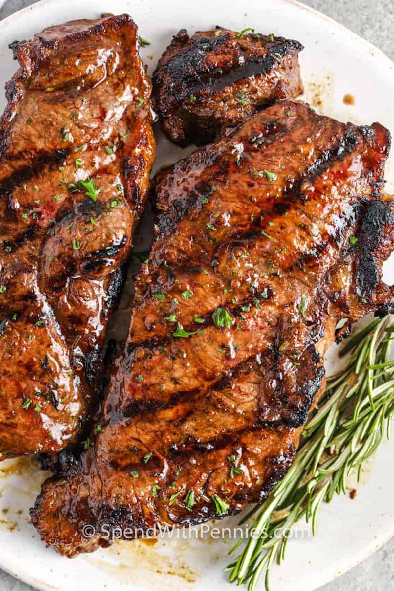

The Best Steak Marinade

Description
This easy steak marinade is truly the best you'll ever try. Made with convenient ingredients that may already be in your pantry, you'll come back to this steak marinade recipe time after time.
Ingredients
- ¼ cup olive oil
- ¼ cup balsamic vinegar
- ¼ cup Worcestershire sauce
- ¼ cup soy sauce
- 2 teaspoons Dijon mustard
- 2 teaspoons minced garlic
- 1 pinch salt and pepper to taste
Steps
- Mix olive oil, balsamic vinegar, Worcestershire sauce, soy sauce, Dijon mustard, and garlic in a small bowl.
- Season with salt and pepper.
Home